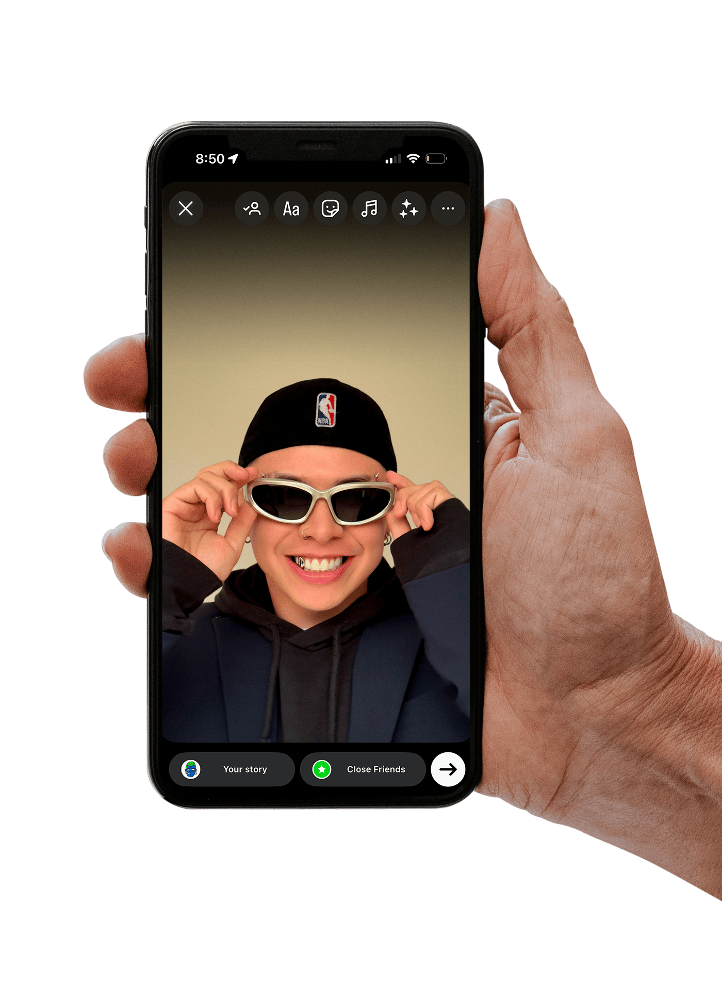
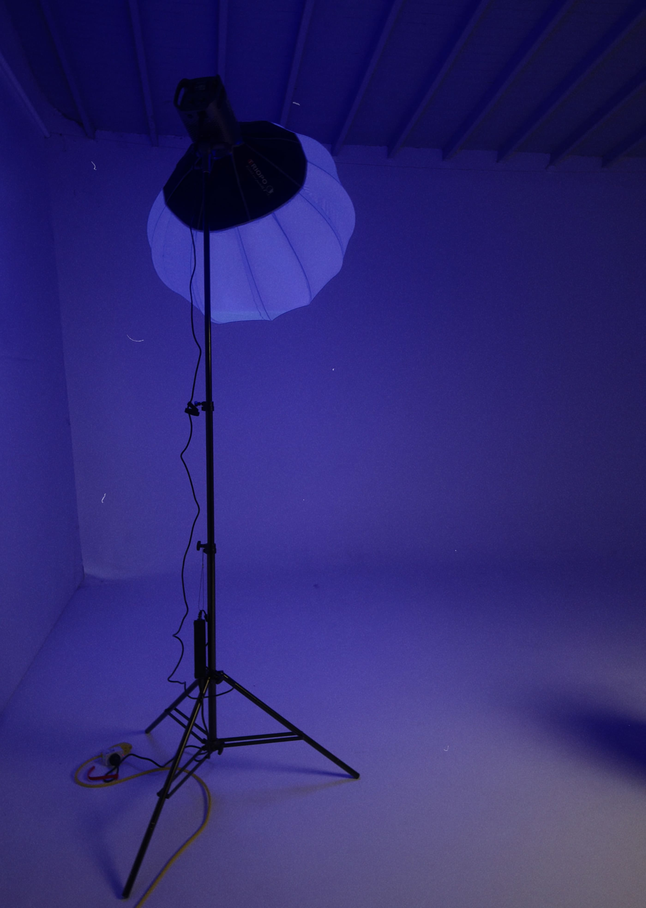

En la era digital, no somos, sino que nos mostramos. Nuestra versión online es una construcción: más limpia, más bella, más feliz. Cada selfie editada, cada caption calculado, cada story elegida con precisión quirúrgica habla más de lo que queremos que crean que somos que de lo que realmente sentimos. Las redes sociales no solo modifican lo que compartimos, sino también lo que pensamos de nosotros mismos. Comparamos, competimos, nos validamos con likes que duran segundos y dejamos de publicar cuando sentimos que ya no encajamos. En este espacio no hay silencios, ni contradicciones, ni lágrimas sin filtro. Hay algoritmos que nos empujan a repetir versiones exitosas de nosotros, mientras la identidad real queda en backstage. ¿Qué queda cuando apagamos la pantalla? Tal vez, solo el eco de una versión que ya no sabemos si fue real o simplemente viral por unos minutos.
✶ SCREEN ✶
La versión que mostramos en redes sociales
Post to pretend, Scroll to forget
Soy mi propio Director Creativo

En la era digital, nadie llega a conocerte si tú no decides cómo presentarte. Cada publicación es una elección estética. Cada selfie tiene una intención. Cada story, una narrativa. Y tú estás a cargo de todo: dirección, edición, diseño, producción y hasta stylling.
Las redes sociales nos han convertido en creativos de nuestra propia imagen. No se trata solo de mostrar lo que vivimos, sino de construir quiénes somos ante los ojos de los demás. Creamos moodboards con nuestra vida. Ajustamos colores, encuadres, filtros y textos para narrar una historia donde nosotros somos protagonistas, pero también creadores de contenido.
Ser tu propio director creativo no es solo estética: es estrategia emocional. Es saber cuándo mostrar vulnerabilidad, cuándo esconderla detrás de un meme, cuándo compartir la felicidad o cuándo convertirla en contenido. Es jugar con la percepción, moldearla y usarla a favor de una versión de ti mismo que, aunque editada, sigue siendo profundamente tuya (y totalmente válida).
Porque no se trata de fingir. Se trata de contar tu historia en tu lenguaje visual. De tener el poder de elegir qué mostrar, cuándo, y cómo. Y en ese proceso, también descubres algo: tal vez no estás solo creando contenido… tal vez estás diseñando tu identidad.
... y también mi stylist
Antes de subir una storie, hay una pregunta silenciosa que se responde frente al espejo: ¿qué versión de mí quiero mostrar hoy? Elegir un outfit no es solo cuestión de estilo, es estrategia. Cada prenda, cada textura, cada color, habla por nosotros antes de que digamos la más mínima palabra.
En la era digital, el vestuario se convierte en mensaje. Nos vestimos para ser leídos: atrevidos, suaves, misteriosos, sofisticados. El look comunica lo que sentimos, lo que aspiramos, lo que queremos que los demás vean. En un mundo saturado de imágenes, el outfit correcto es tu carta de presentación.
Y no se trata de tener el armario más caro, sino el más intencional. De combinar prendas como si fueran piezas de una narrativa visual. De usar el vestuario como manifiesto personal. Porque sí: estamos diciendo algo. Y la ropa es la primera línea de nuestro discurso.
Descargar revista en PDF
En la era digital, nadie llega a conocerte si tú no decides cómo presentarte. Cada publicación es una elección estética. Cada selfie tiene una intención. Cada story, una narrativa. Y tú estás a cargo de todo: dirección, edición, diseño, producción y hasta stylling. Las redes sociales nos han convertido en creativos de nuestra propia imagen. No se trata solo de mostrar lo que vivimos, sino de construir quiénes somos ante los ojos de los demás. Creamos moodboards con nuestra vida. Ajustamos colores, encuadres, filtros y textos para narrar una historia donde nosotros somos protagonistas, pero también creadores de contenido. Ser tu propio director creativo no es solo estética: es estrategia emocional. Es saber cuándo mostrar vulnerabilidad, cuándo esconderla detrás de un meme, cuándo compartir la felicidad o cuándo convertirla en contenido. Es jugar con la percepción, moldearla y usarla a favor de una versión de ti mismo que, aunque editada, sigue siendo profundamente tuya (y totalmente válida). Porque no se trata de fingir. Se trata de contar tu historia en tu lenguaje visual. De tener el poder de elegir qué mostrar, cuándo, y cómo. Y en ese proceso, también descubres algo: tal vez no estás solo creando contenido… tal vez estás diseñando tu identidad.
Antes de subir una storie, hay una pregunta silenciosa que se responde frente al espejo: ¿qué versión de mí quiero mostrar hoy? Elegir un outfit no es solo cuestión de estilo, es estrategia. Cada prenda, cada textura, cada color, habla por nosotros antes de que digamos la más mínima palabra. En la era digital, el vestuario se convierte en mensaje. Nos vestimos para ser leídos: atrevidos, suaves, misteriosos, sofisticados. El look comunica lo que sentimos, lo que aspiramos, lo que queremos que los demás vean. En un mundo saturado de imágenes, el outfit correcto es tu carta de presentación. Y no se trata de tener el armario más caro, sino el más intencional. De combinar prendas como si fueran piezas de una narrativa visual. De usar el vestuario como manifiesto personal. Porque sí: estamos diciendo algo. Y la ropa es la primera línea de nuestro discurso.